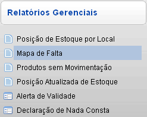
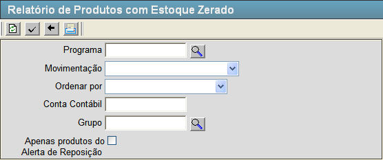
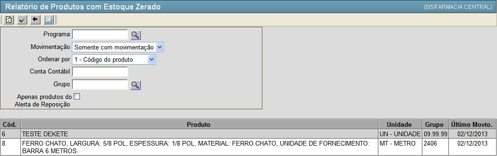

Mapa de Falta [ Voltar ]Esta tela permite o
usuário realizar consultas ao estoque por materiais que estão em falta. Para acessá-la clique no link "Mapa de Falta" dentro do menu "Estoque - Relatórios Gerenciais".  O sistema abrirá a seguinte tela:  Para realizar uma consulta de materiais em falta no estoque, siga os passos a seguir: 1º Passo: preencha os campos de filtro da tela de acordo com sua necessidade.
2º Passo: clique no botão  . O sistema irá retornar o resultado da consulta conforme imagem abaixo. . O sistema irá retornar o resultado da consulta conforme imagem abaixo. Para gerar um documento a fim de impressão clique no botão  [Relatório], você será redirecionado para o relatório "MAPA DE FALTA" com os resultados. [Relatório], você será redirecionado para o relatório "MAPA DE FALTA" com os resultados. |
 [Pesquisar] para selecioná-lo por meio de uma listagem contendo todos os programas cadastrados.
[Pesquisar] para selecioná-lo por meio de uma listagem contendo todos os programas cadastrados.